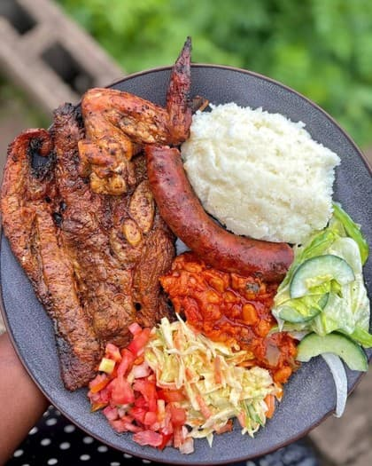
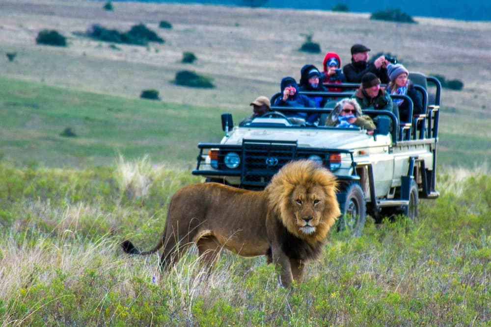

Top Destinations
Visit Cape Town, Johannesburg, Durban, Pretoria, and many other exciting places.
Explore Destinations
From stunning coastlines and vibrant cities to incredible wildlife and rich cultural traditions, South Africa offers unforgettable experiences.
South Africa is known as the Rainbow Nation because of its diverse cultures, languages, and people. Explore famous attractions, discover local traditions, and learn about one of Africa's most fascinating countries.
Visit Cape Town, Johannesburg, Durban, Pretoria, and many other exciting places.
Explore Destinations
Learn about South Africa's traditions, languages, music, and delicious cuisine.
Discover Culture
Discover the Big Five and explore South Africa's famous national parks.
View Wildlife